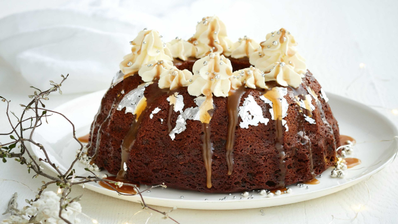
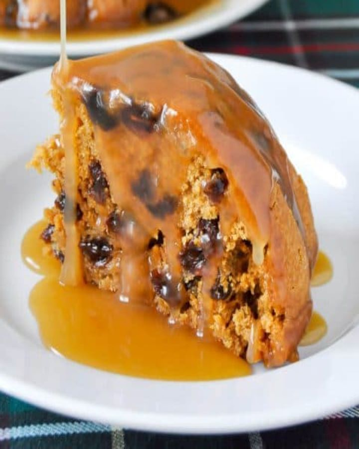

Raisin Pudding
BY EMA HAMLITON | OCTOBER 2019
TRENDING:
plum pudding in American English a rich dessert made of raisins, currants, flour, spices, suet, etc. and boiled or steamed. Word origin.Pudding is a type of food that can be either a dessert or a savory (salty or spicy) dish that is part of the main meal. ... Pudding may also refer to other dishes such as bread pudding and rice pudding, although typically these names derive from their origin as British dishes.
Available at Cafe Delight at $14
RELATED VIDEOS:
INGREDIENTS REQUIRED:

Video receipe of Raisin Pudding:
PROCESS:

1.Combine brown sugar, water, and butter in a saucepan. Boil for
5 minutes.
2.Pour into a buttered 2-quart casserole dish.
3.In a separate bowl, combine flour, sugar, salt, baking powder,
raisins, milk, and vanilla; blend thoroughly.
4.Pour over hot mixture in casserole dish.
5.Bake raisin pudding for 25 to 30 minutes at 350 F.